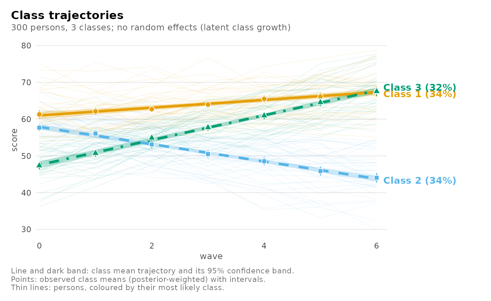
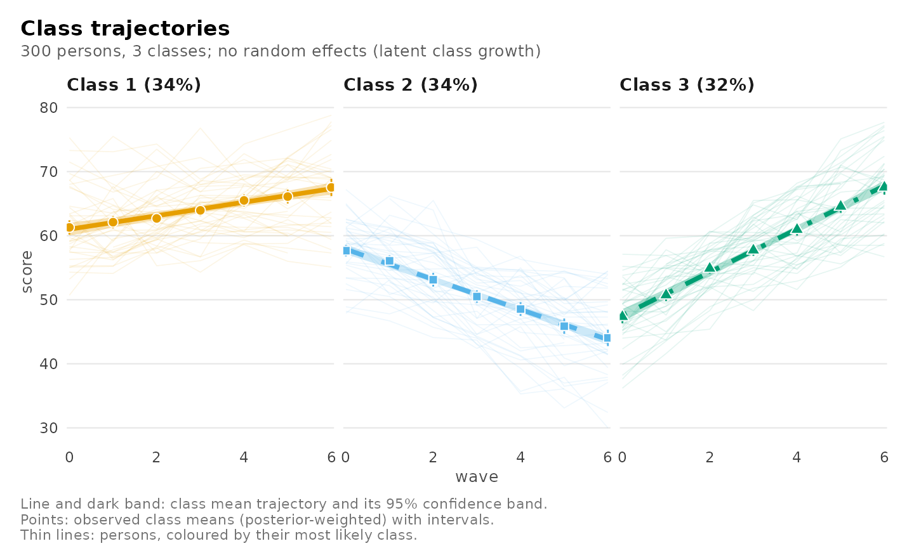
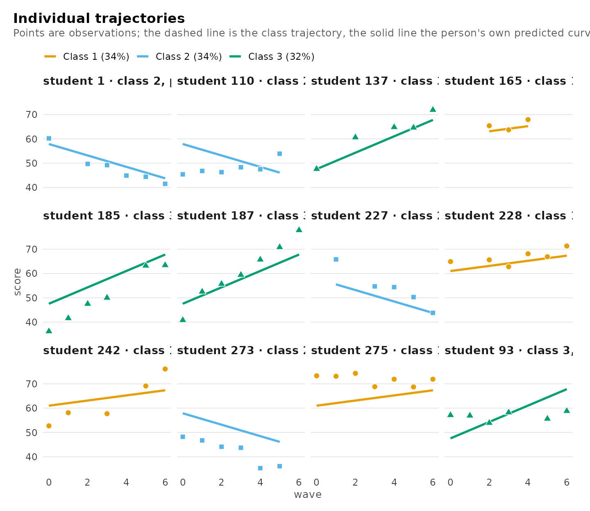
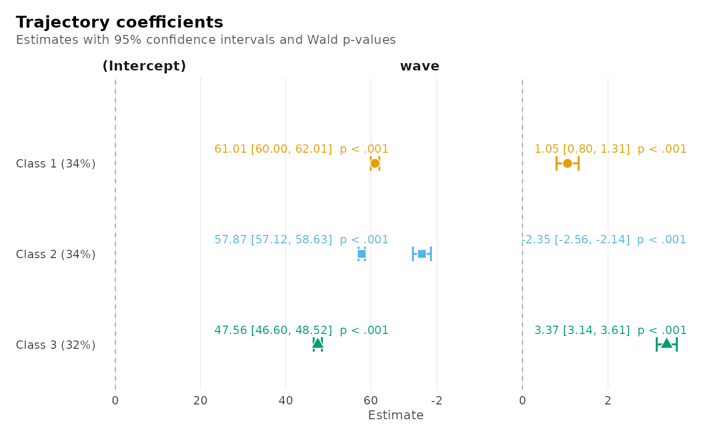
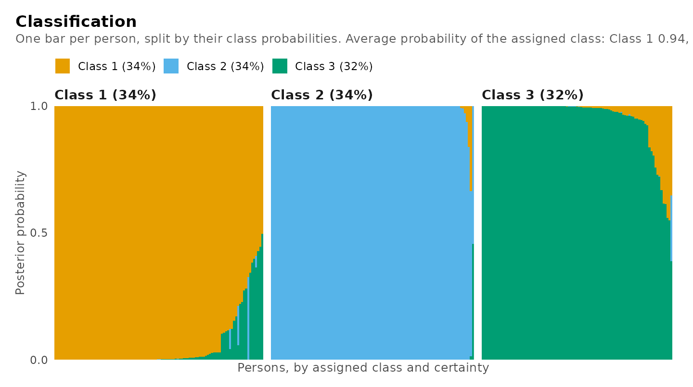
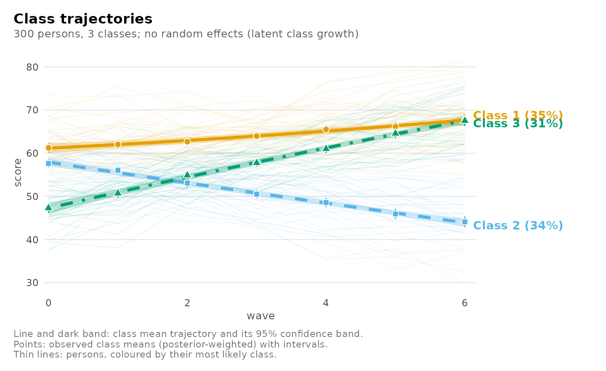
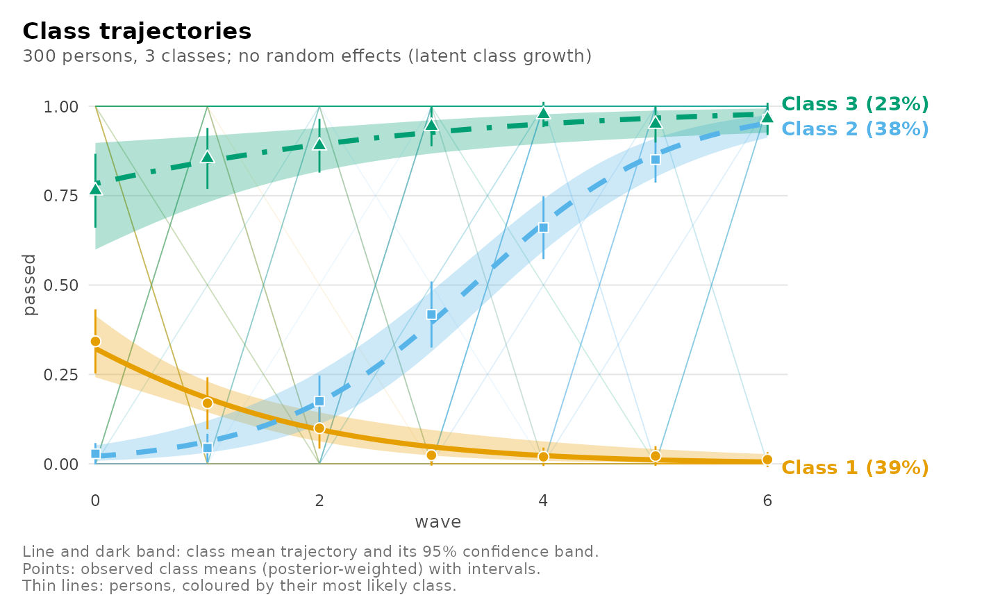
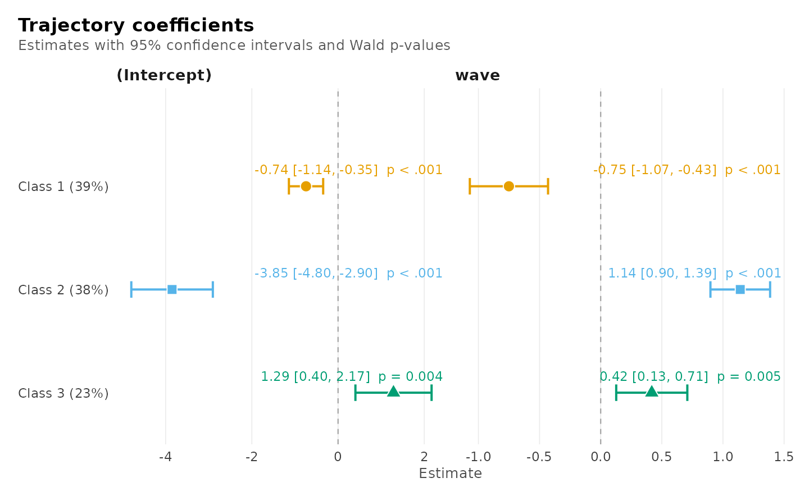
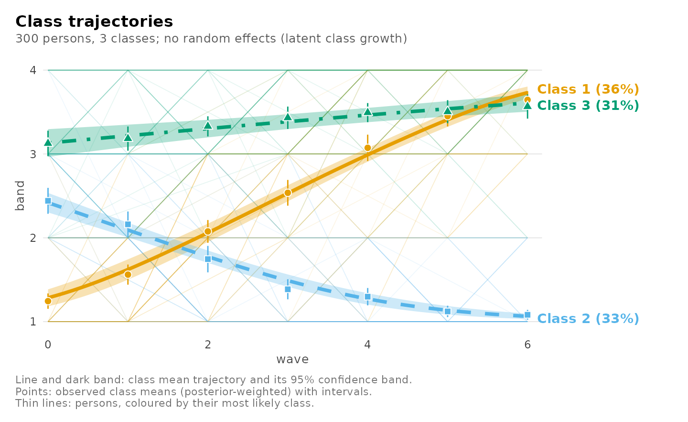
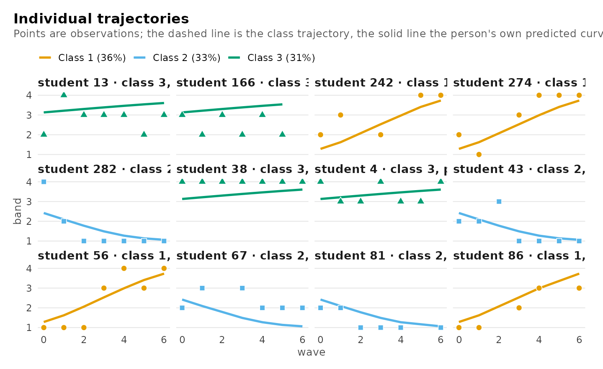

Latent class growth analysis: classes of trajectories
Written by Mohammed Saqr and Sonsoles López-Pernas
Source:vignettes/trajectory-classes.Rmd
trajectory-classes.RmdWhen the same people are measured repeatedly, latent class growth analysis (Nagin 2005; also called group-based trajectory modelling) finds a small number of classes, each with its own trajectory, and assigns every person to the class whose trajectory they follow. Everyone in a class is assumed to follow that trajectory exactly; what remains is noise.
That assumption is its strength and its limit:
- Strength. The model is simple, fast and fits any outcome the regression mixture fits: continuous scores, pass/fail, counts, ordered ratings.
-
Limit. People of the same kind rarely follow one
curve exactly. When they vary around it, the model can only express that
by adding classes, so it tends to find more classes than there are kinds
(Bauer and Curran 2003). The growth mixture model adds random effects
for that variation; it is the subject of
vignette("growth-mixture").
A useful habit is to fit both and compare them
(compare_models()), as the growth-mixture vignette
does.
| Role | Argument | Here |
|---|---|---|
| Outcome, measured repeatedly | left of ~
|
score |
| Time (any shape) | right of ~
|
wave, wave + I(wave^2)
|
| Person |
id, with class_level = "group"
|
student |
| Kind of outcome | family |
"gaussian", "binomial",
"poisson", "negative_binomial",
"ordinal"
|
| What predicts the class | membership |
"motivation" |
The data
growth_scores is simulated so the answer is known: 300
students tested on up to seven waves, of three kinds (improving, stable,
declining), each student varying a little around their kind’s
trajectory, with motivation predicting the kind. Missed tests (about
12%) need no imputation.
Fitting and choosing the number of classes
Persons are the classified units, so id names them and
class_level = "group" keeps all of a person’s measurements
in one class.
enumerate_regressions(score ~ wave, growth_scores, n_classes = 1:5,
id = "student", class_level = "group",
n_starts = 5, seed = 1)
#> Mixture regression class enumeration
#>
#> n_classes n_group_classes log_likelihood n_parameters bic icl entropy smallest_share
#> 1 1 -6629 3 13276 13276 NA 1.0000
#> 2 1 -6080 7 12199 12210 0.9725 0.3263
#> 3 1 -5890 11 11842 11897 0.9156 0.3179
#> 4 1 -5778 15 11641 11689 0.9419 0.1376
#> 5 1 -5658 19 11425 11487 0.9359 0.1248
#> converged best_bic
#> TRUE FALSE
#> TRUE FALSE
#> TRUE FALSE
#> TRUE FALSE
#> TRUE TRUE
#>
#> One model: get_results(x, "model", n_classes = ).The BIC keeps falling up to five classes, although only three kinds of student generated the data: the students’ own spread around their kind’s trajectory is being absorbed by extra classes. With these data the growth mixture model, which models that spread, picks three. Here, to keep the three kinds, the three-class model is read:
fit <- mixture_regression(score ~ wave, growth_scores, n_classes = 3,
id = "student", class_level = "group",
membership = "motivation", n_starts = 5, seed = 1)
fit
#> Mixture of gaussian regressions: 3 classes (one class per `student`)
#> score ~ wave
#> 1844 rows in 300 groups | log likelihood -5848.9652 | BIC 11772.08 | entropy 0.917
#> Converged: TRUE | iterations: 23 | best likelihood reached by 6 of 6 completed starts (6 run)
#>
#> Classes
#>
#> Class Share Expected Groups assigned Avg. posterior Residual SD
#> ------- ----- -------- --------------- -------------- -----------
#> Class 1 0.345 103.41 104 0.944 5.16
#> Class 2 0.336 100.81 101 0.989 5.16
#> Class 3 0.319 95.78 95 0.949 4.71
#>
#> Regression coefficients (95% CI)
#>
#> Class Term Estimate 95% CI p
#> ------- --------- -------- -------------- -----
#> Class 1 Intercept 61.01 [60.00, 62.01] <.001
#> Class 1 wave 1.05 [ 0.80, 1.31] <.001
#> Class 2 Intercept 57.87 [57.12, 58.63] <.001
#> Class 2 wave -2.35 [-2.56, -2.14] <.001
#> Class 3 Intercept 47.56 [46.60, 48.52] <.001
#> Class 3 wave 3.37 [ 3.14, 3.61] <.001
#>
#> Every table: get_results(x, what = ), e.g. "classes", "membership", "fit", "assignments".Every table is a data frame from get_results():
get_results(fit, "classes")
#> Classes
#>
#> Class Share Expected Groups assigned Avg. posterior Residual SD
#> ------- ----- -------- --------------- -------------- -----------
#> Class 1 0.345 103.41 104 0.944 5.16
#> Class 2 0.336 100.81 101 0.989 5.16
#> Class 3 0.319 95.78 95 0.949 4.71
get_results(fit, "membership")
#> Class membership (log odds, 95% CI)
#>
#> Class Term Estimate 95% CI p Odds ratio
#> ------- ---------- -------- -------------- ----- ----------
#> Class 2 Intercept -0.28 [-0.62, 0.06] .110 0.76
#> Class 2 motivation -1.01 [-1.39, -0.62] <.001 0.36
#> Class 3 Intercept -0.30 [-0.68, 0.09] .128 0.74
#> Class 3 motivation 0.62 [ 0.26, 0.99] <.001 1.87
get_results(fit, "recovery", data = growth_scores, truth = "trajectory")
#> Recovery of a known classification
#>
#> Assigned trajectory Groups Share of assigned
#> -------- ---------- ------ -----------------
#> Class 1 improving 26 0.250
#> Class 2 improving 1 0.010
#> Class 3 improving 88 0.926
#> Class 1 stable 77 0.740
#> Class 2 stable 4 0.040
#> Class 3 stable 7 0.074
#> Class 1 declining 1 0.010
#> Class 2 declining 96 0.950
#> Class 3 declining 0 0.000Seeing the classes
Every view of a trajectory fit is one plot() call. Each
class’s trajectory with its confidence band, the band within which 80%
of its students’ observations lie, and the observed class means:
plot(fit)
The same with one panel per class:
plot(fit, facet = TRUE)
Individual students, chosen across each class’s range of classification certainty: their observations and their class trajectory.
plot(fit, what = "individuals")
The coefficients with their intervals and p-values:
plot(fit, what = "coefficients")
How confidently each student is classified, one bar per student:
plot(fit, what = "classification")
Curved trajectories
Any formula works. A quadratic lets each class bend; compare it with
the straight model fitted the same way (without
membership):
straight <- mixture_regression(score ~ wave, growth_scores, n_classes = 3,
id = "student", class_level = "group",
n_starts = 5, seed = 1)
curved <- mixture_regression(score ~ wave + I(wave^2), growth_scores,
n_classes = 3, id = "student", class_level = "group",
n_starts = 5, seed = 1)
compare_models(straight = straight, curved = curved)
#> Model comparison
#>
#> Model Classes Random k LogLik BIC ΔBIC Weight Entropy
#> -------- ------- ------ -- -------- -------- ----- ------ -------
#> straight 3 none 11 -5889.55 11841.85 0.00 1.000 0.92 <- best
#> curved 3 none 14 -5888.78 11857.41 15.56 0.000 0.92These trajectories were generated straight, so the BIC does not reward the curvature.
plot(curved)
Outcomes that are not scores
This is where latent class growth analysis is needed: random effects for a binary, count or ordered outcome need numerical integration, which the growth mixture model does not do, so trajectories of such outcomes are fitted here.
Pass or fail. Whether each test reached 60 points, with a logistic trajectory per class:
passing <- transform(growth_scores, passed = as.integer(score >= 60))
pass_fit <- mixture_regression(passed ~ wave, passing, n_classes = 3,
family = "binomial", id = "student",
class_level = "group", n_starts = 5, seed = 1)
get_results(pass_fit, "coefficients")
#> Regression coefficients (95% CI)
#>
#> Class Term Estimate 95% CI p Odds ratio
#> ------- --------- -------- -------------- ----- ----------
#> Class 1 Intercept -0.74 [-1.14, -0.35] <.001 0.476
#> Class 1 wave -0.75 [-1.07, -0.43] <.001 0.472
#> Class 2 Intercept -3.85 [-4.80, -2.90] <.001 0.021
#> Class 2 wave 1.14 [ 0.90, 1.39] <.001 3.132
#> Class 3 Intercept 1.29 [ 0.40, 2.17] .004 3.619
#> Class 3 wave 0.42 [ 0.13, 0.71] .005 1.519Each class’s probability of passing over the waves, and the coefficients:
plot(pass_fit)
plot(pass_fit, what = "coefficients")
Ordered bands. The score in four ordered bands, with a cumulative-logit (proportional odds) trajectory per class (McCullagh 1980): each class has its own thresholds between the bands and its own slope over the waves.
banded <- transform(growth_scores,
band = cut(score, c(-Inf, 52, 58, 64, Inf),
labels = c("low", "middle", "high", "top"),
ordered_result = TRUE))
band_fit <- mixture_regression(band ~ wave, banded, n_classes = 3,
family = "ordinal", id = "student",
class_level = "group", n_starts = 5, seed = 1)
get_results(band_fit, "coefficients")
#> Regression coefficients (95% CI)
#>
#> Class Term Estimate 95% CI p Odds ratio
#> ------- --------------------- -------- ----------------- ----- ----------
#> Class 1 Threshold low|middle 1.107 [ 0.663, 1.550] <.001
#> Class 1 Threshold middle|high 3.396 [ 2.781, 4.010] <.001
#> Class 1 Threshold high|top 5.848 [ 5.079, 6.617] <.001
#> Class 1 wave 1.168 [ 1.012, 1.323] <.001 3.21
#> Class 2 Threshold low|middle -2.115 [ -2.484, -1.745] <.001
#> Class 2 Threshold middle|high 0.100 [ -0.205, 0.404] .520
#> Class 2 Threshold high|top 2.913 [ 2.195, 3.630] <.001
#> Class 2 wave -0.822 [ -0.951, -0.692] <.001 0.44
#> Class 3 Threshold low|middle -6.249 [-13.843, 1.345] .107
#> Class 3 Threshold middle|high -1.538 [ -2.106, -0.971] <.001
#> Class 3 Threshold high|top 0.802 [ 0.403, 1.202] <.001
#> Class 3 wave 0.241 [ 0.137, 0.346] <.001 1.27The plot shows each class’s expected band (1 = low to 4 = top), and the students’ own bands over the waves:
plot(band_fit)
plot(band_fit, what = "individuals")
Counts work the same way with family = "poisson", or
family = "negative_binomial" when the counts are more
spread out than a Poisson allows.
Distal outcomes
Do the classes differ on something measured once per person?
three_step() compares class means with the bias-corrected
three-step method (Vermunt 2010; Bakk and Vermunt 2016), which accounts
for persons being classified with error. The trajectory model must be
fitted without membership for this correction:
three_step(straight, data = growth_scores, outcome = "motivation",
contrast = "pairs")
#> Distal outcome: class differences (bch, 95% CI)
#>
#> Class vs Difference 95% CI p p (BH)
#> ----- -- ---------- ------------ ----- ------
#> 2 1 0.71 [0.46, 0.96] <.001 <.001
#> 3 1 1.22 [0.96, 1.48] <.001 <.001
#> 3 2 0.51 [0.24, 0.79] <.001 <.001Choices and warnings
-
Latent class growth analysis or a growth mixture
model? If persons of the same kind vary around their trajectory
– they almost always do for scores – fit the growth mixture model too
and compare them with
compare_models(); prefer it when it fits better. Use latent class growth analysis for non-Gaussian outcomes, for a first look, and when within-class variation is not plausible. -
Number of classes. Read the BIC with the
over-extraction above in mind; the bootstrap likelihood-ratio test
(
enumerate_regressions(bootstrap =)) is the stronger evidence. -
Starts. Use several (
n_starts), and check that the best likelihood is reached more than once (the fit reports how many times).
References
Bakk, Z., & Vermunt, J. K. (2016). Robustness of stepwise latent class modeling with continuous distal outcomes. Structural Equation Modeling, 23, 20–31.
Bauer, D. J., & Curran, P. J. (2003). Distributional assumptions of growth mixture models: Implications for overextraction of latent trajectory classes. Psychological Methods, 8, 338–363.
McCullagh, P. (1980). Regression models for ordinal data. Journal of the Royal Statistical Society B, 42, 109–142.
Nagin, D. S. (2005). Group-based modeling of development. Harvard University Press.
Vermunt, J. K. (2010). Latent class modeling with covariates: Two improved three-step approaches. Political Analysis, 18, 450–469.